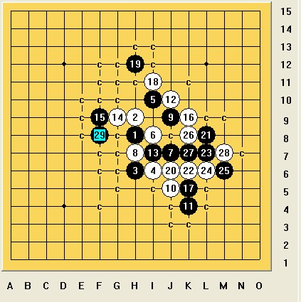

[棋坛风月趣事]良师带我初试山口规则
#1 [棋坛风月趣事]良师带我初试山口规则 作者：茗弈小刀 发表时间：2009-2-5 10:00:07

师傅宫牧洲北京民族团结杯五子棋比赛连续三届冠军，第七届北京市青年体育节 五子棋公开赛获亚军，2002年3月升四段，当初与吴昊是那威五子棋俱乐部的并驾齐驱的两驾战车。因高考，出国留学封棋。现已晋级六段。
在2001年时， 张进宇老师曾这么评价：宫牧洲是最新涌现的高手，正准备高考，年纪很小。据说以前特别用功，棋谱背的烂熟，但是比赛成绩不够理想。某日突然开窍，他以前打下的基本功都发挥了作用，使他一下子超越很多以前比他强的人。最近几个月他看了很多e-mail比赛的棋谱，对流行的东西非常熟悉，同时有大量自己的研究。李睿凡本来认为他和宫牧洲差不多，现在都惊叹他的进步，自愧弗如。
上次师傅教我下棋已是很久以前的事了，由于他在澳洲念书，学业忙，我也不便打搅他。元月份师傅告诉我他回国过节了，要呆到二月份才走，我心里说不出多高兴，感觉师傅离我很近了，可以多教我下棋啦。于是，我天天盼望着。谁知道一个月过去了，棋室里连师傅的影子也没见着。火热的心一点点渐渐冷却，师傅不要刀儿了，呜呜。懊丧之余拨通师傅的电话，师傅在电话那头很抱歉的说，他回来挺忙，要走亲戚看朋友等，最后师傅伤怀而无奈的叹了口气：“我退出五子棋很多年了，你们现在下的很多变化我都不会。”哎，我还能说什么呢？非要师傅来下棋不就是难为他了吗？
昨天晚上我正在下棋，突然线上一个小兔子跳呀跳的。一看是师傅！他说：下盘山口规则吧。我欣喜的答应着。师傅来到棋室和我坐下，我犯难了：山口规则我没下过呀，说实话对山口规则的理解还是处于迷糊状态。我装作会下的样子点了开始。师傅说：你开吧。我在天元落子了，等了一会师傅还不下，就说：“师傅该你下呀”。“哈哈，刀儿得把前四手位置说了，再说二打位置，我决定换不。”啊，这样子呀。以前别人给我说了很多次山口规则，我都没弄明白，师傅这么一说，我顿时豁然开朗。
换不换，师傅？“不！不换！”师傅说的斩钉截铁。呵呵，师傅真可爱。“必须你拿黑”师傅怕我不明白又补充一句“太好了，我就是要让你觉得黑优，但是比赛时你未必能下赢哈哈"。这时候社里很多朋友和我的徒弟都来了，大家亲热的叫着：宫老师好!师公好!........师傅也很开心和大家一一打找招呼:大家都来一起学习山口规则吧!徒弟们很多不懂师傅又耐心的告诉他们。
师傅留了这个3打的5,这个5在网战中不多见,但现实比赛它的出现率是很大的.师傅下最强的6.想到师傅基础很牢固的,只有变着花招才希望获胜,我下了这个带有骗成分的7.心里暗暗偷笑,师傅肯定没见过这个7,因为他是老古板级人物.谁知道,师傅8手正确无误的下在了强点上.哎哟!那我不惨了嘛.
心里纳闷呢:师傅怎么知道这个点？这个7是骗招呢 我骗了很多人的.“这玩意现想还想不出来啊，很明显嘛.我有很多棋谱垫底，有很多基础，想骗我也非易事啊."师傅自豪的说.大家都笑起来.这时有个朋友问:“宫老师看起来好像才十多岁哩."“才不是呢，你看得那是老皇历了."师傅不服气的说.我说:师傅现在已经是个小伙子了.感觉那边师傅脸上有了笑容.哈哈,可爱的师傅!
这一局在大家交谈,欢快的气氛下结束,当然最后我输了,不过我赖皮的在最后学挂的语气说道:“棋盘都快满了,就和棋了吧!"师傅果然很痛快的提和.
心里有些不舍大家纷纷说到:宫老师再见,谢谢老师.这时,师傅突然说:“哈哈,再来一盘吧!"哇,难得师傅今天这么有雅兴,太好了.瑞星!瑞星!大家吼着.好吧师傅说就下瑞星,刀儿说吧!我寻思着尽量下大家不熟悉的点,让大家看看山口规则后发生的变化.我指定这么开局给师傅选择。
换不: 师傅仍坚持不换.这个4 和5从没下过,我也很茫然.

师傅心情很好“哈哈，怎么样，这次你的那些流行变化不管用了吧？"这一盘我也落荒而败.师傅最后满意而肯定的说:“山口规则好!所以就又把五子棋变成了公平的较量!"
时间呀,谁能留得住?师傅要休息了,和大家依依不舍的道别.大家眼里都噙着泪.我想在这里,我和大家对宫牧洲良师的感情用任何语言来表达都显得苍白.让我代表大家向宫老师和象宫老师一样执着热爱五子棋和为五子棋奉献自己的老师们深深说一句:谢谢!/*760*90，创建于2012-2-9*/ var cpro_id = 'u761865';
#2 Re:良师带我初试山口规则 作者：罗马王子 发表时间：2009-2-5 19:41:27
 下得很精彩。山口规则好象不错，可以到ORC里面下下。
下得很精彩。山口规则好象不错，可以到ORC里面下下。
#3 Re:良师带我初试山口规则 作者：无解 发表时间：2009-2-9 23:54:20
支持 ~~~~~ 更支持刀姐姐！
［ 茗弈小刀 于 2009-2-10 18:03:53 时奖励此帖[金币加 20 威望加1］
#4 Re:良师带我初试山口规则 作者：茗弈小刀 发表时间：2009-2-10 18:05:33
补充一点：1 2 3手落子后再由执黑方提出打点位置，这个打点可以是很多个点，4手在白方决定交换不之后再下。#5 Re:良师带我初试山口规则 作者：冰封魔灵 发表时间：2009-2-10 22:01:05
好
#6 Re:良师带我初试山口规则 作者：夏百萧 发表时间：2009-2-13 0:27:13
他好像一直在下棋吧 不像封棋的样子 不然怎么还懂什么山口规则 还下的这么好 在澳洲念书就忙了吗 除了睡觉就是看书啊?#7 Re:良师带我初试山口规则 作者：茗弈小刀 发表时间：2009-2-13 11:15:14
哈哈，师傅封比赛多年了，知道三口规则那是因为拉他进了我们建的个山口规则群。
#8 Re:良师带我初试山口规则 作者：刀魂 发表时间：2009-3-7 11:29:18
小师姐，您很不错，在棋道方面不在乎年龄，你可以向比你小的人学习，甚至是曾经对不起你的人学习，在这方面我要向你学习，也许
只有这样才能学到精髓，佩服您对连珠的理解，更佩服您对人生的感悟（其实你没有那么伟大，估计是我把你想像的过于超过现实啦{情不自禁的玩笑，纯属意外}）
#9 Re:良师带我初试山口规则 作者：冷酒一杯 发表时间：2009-4-21 18:40:46
确实是很特别的，有特别之格，特别之力，特别之情。佩服。天天